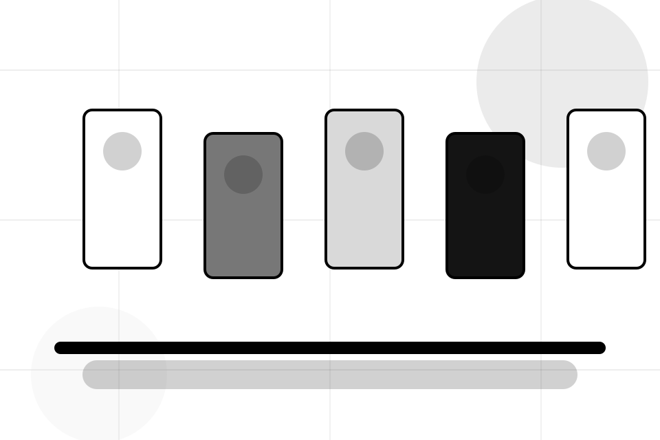
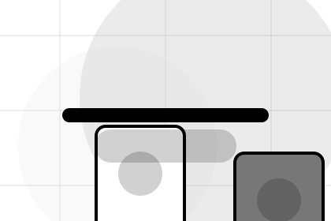
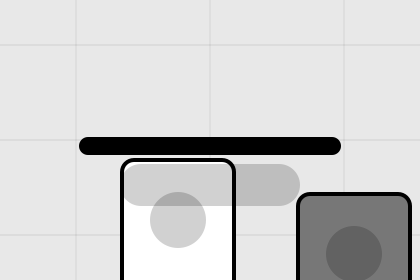

Sellers / 01
Sellers by Market
Sellers shaped for e-commerce, marketplaces & digital commerce decisions.
Sellers opens as a clear e-commerce decision hub: what Market offers, who it helps, why it matters, and which route to take first.
The first screen combines positioning, proof, primary action, and fast internal navigation, so people can act immediately or compare the rest of the sellers route with context.
Browse quicklyCompare clearlyAsk availability
Fashion-commerce grid hero
Choose buyer or seller
Select the closest route and Market keeps the next step, proof, and follow-up expectation aligned with speed and transaction trust.

Sellers / 02
Benefits: the better state
Benefits defines the better state Market is built to create, with enough detail to make the promise believable.
A marketplace catalogue with black-white product grids, tiny metadata, filter logic, and checkout routing. The section grounds that direction in concrete benefits, visible tradeoffs, and a next route visitors can use when the promise feels relevant.
Explore SellersBetter State
Benefits defines what becomes clearer, easier, or safer when Market is the chosen route.
Practical Gain
The benefit is tied to speed and transaction trust, not a vague quality claim.
Proof Route
Visitors get a linked path to compare the promise against services, standards, or examples.
Sellers / 03
Requirements inside sellers
Requirements adds commerce context to the sellers route, using the monochrome catalogue system structure to support speed and transaction trust before visitors choose a next step.
Market uses monochrome product cards and focused copy to make the decision easier to scan, aligning the section with speed and transaction trust rather than filling space.
Explore SellersContext
Requirements gives the page a specific angle instead of repeating the navigation label.
Judgment
The monochrome product cards show what to compare, what to avoid, and what matters most for e-commerce, marketplaces & digital commerce visitors.
Direction
The final cue points to a useful internal route so the section keeps the journey moving.
Sellers / 04
Compare scope and terms
Fees makes commercial comparison easier by showing fit, scope, and terms before e-commerce visitors ask for the next step.
The layout keeps price-sensitive decisions honest: it separates starting scope, fuller delivery, and ongoing support so the visitor can ask a sharper question.
View PricingFit
Who the offer is for, which scope it suits, and when a different route may be better.
Scope
What is included clearly enough for e-commerce, marketplaces & digital commerce visitors to compare value without hidden jargon.
Terms
The practical details that should be confirmed before someone asks to browse the market.
Browse
Who the offer is for, which scope it suits, and when a different route may be better.
ScopedBundle
What is included clearly enough for e-commerce, marketplaces & digital commerce visitors to compare value without hidden jargon.
QuotedScale
The practical details that should be confirmed before someone asks to browse the market.
RetainerSellers / 05
Onboarding inside sellers
Onboarding adds commerce context to the sellers route, using the monochrome catalogue system structure to support speed and transaction trust before visitors choose a next step.
Market uses monochrome product cards and focused copy to make the decision easier to scan, aligning the section with speed and transaction trust rather than filling space.
Explore SellersMarket structures onboarding around context, judgment, and a clear next route so visitors can compare the block quickly before they browse the market.
Browse MarketSellers / 06
How the setup path works
Setup explains the operating sequence so visitors can see how the first request becomes a clear recommendation and follow-up.
The steps are written from the visitor side: what they do first, what Market clarifies, what they receive, and how support continues.
Explore SellersStart
How visitors begin this route and what detail is useful at the first step.
Clarify
What Market reviews, filters, or explains before recommending the next move.

Continue
What the visitor receives afterward, including support, proof, or a handoff to the next page.
Sellers / 07
Standards, not claims
Standards gives the proof layer for sellers: standards, evidence, and reassurance that make the next decision feel grounded.
Instead of relying on vague claims, Market presents visible standards, process cues, and proof artifacts that help e-commerce visitors judge fit.
Explore SellersEvidence
Visible proof that helps visitors believe the claims behind standards.
Sellers / 08
Compare service routes
Support explains the practical scope, best-fit situations, and expected outcome so e-commerce visitors can compare options without decoding jargon.
The section keeps the offer concrete: what is included, who it is best for, what decision it supports, and which linked route gives the deeper detail.
Open ContactBest Fit
Who should use support and when it belongs in the sellers journey.
What Changes
The practical benefit visitors should expect after choosing this route.
Deeper Route
Where to compare details, pricing, support, or contact options before committing.
Sellers / 09
Browse Market
Market closes the sellers route with a clear action, a quick reminder of the value, and a low-friction way to browse the market.
Visitors who are ready can use the primary action. Visitors who are still comparing can scan the section links, proof, and support routes before they browse the market.
Browse Market- 01
Ready
Use the primary CTA when the fit is clear and timing matters.
- 02
Compare
Review linked proof, questions, and support routes if more context is needed.
- 03
Response
Market keeps the next reply focused on scope, timing, and the right first step.
Sellers / 10
Browse Market
Market closes the sellers route with a clear action, a quick reminder of the value, and a low-friction way to browse the market.
Visitors who are ready can use the primary action. Visitors who are still comparing can scan the section links, proof, and support routes before they browse the market.
Browse MarketThe final block keeps the choice simple: act now, compare one more proof route, or send enough detail for a focused response.
Browse Marketspeed and transaction trust
Browse Market
A marketplace catalogue with black-white product grids, tiny metadata, filter logic, and checkout routing. Sellers ends with a direct path to browse the market, plus enough context for visitors who still need to compare.

Browse MarketImportant notes before you act
Information is provided for planning and should be reviewed for the final client, location, and operating rules.